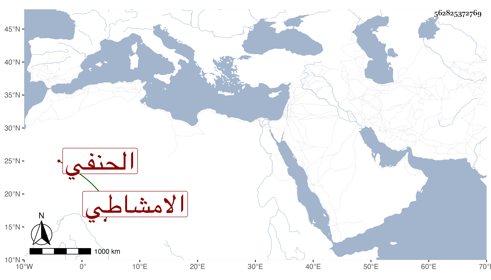

0902Sakhawi.DawLamic.ITO20230111-ara1.EIS1600.562825372769
Biography ID: 562825372769
518
عمائم ابنة زوج الشمس الامشاطي الحنفي ووالدة أبي الفوز الماضي . ماتت في ذى الحجة سنة أربع وثمانين بعد تعللها مدة وصلى عليها برحبة مصلى باب النصر في مشهد حافل ثم دفنت بحوش قريب من الروضة بتلك النواحي وتأسف زوجها عليها وظهر حزنه وكآبته وكان قد حفظ صحبتها وقدم عشرتها بحث رام منه غير واحد التزوج فامتنع منه بل ومن التسرى وغبطها النساء بهذا وقد حجت معه وجاورت في الرجبية وأثكلت عدة أولاد منه ومن غيره ولم يكن بها بأس رحمها الله وإيانا .
